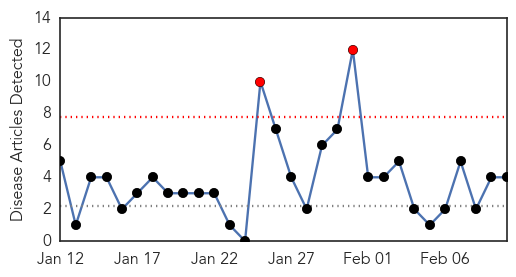
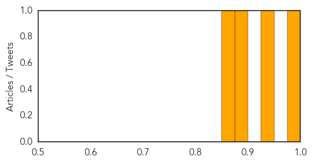
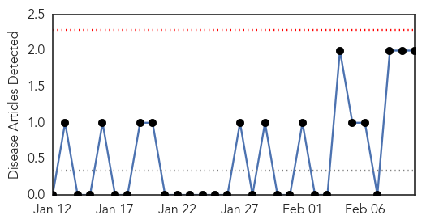
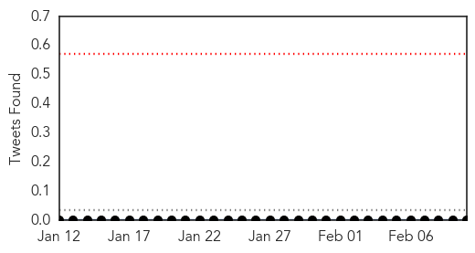

Dengue Fever
30-Day Web Trend
2 alerts, 0 warnings

30-Day Twitter Trend
6 alerts, 0 warnings

Article Locations

Article Confidences
Top Articles:
Top Tweets:
- 0.674
- Flavivirus news: North Qld dengue outbreak spreads - Herald Sun: North Qld dengue outbreak spre... http://t.co/zPT6ERMLDq pathogenposse
- 0.513
- Flavivirus news: HTAR seeing more severe dengue secondary infection cases - New Straits Times O... http://t.co/moOLwgBgY6 pathogenposse
Mumps
30-Day Web Trend
0 alerts, 0 warnings

30-Day Twitter Trend
0 alerts, 0 warnings

Article Locations
Article Confidences

Top Articles:
Top Tweets:
-
No tweets found for Feb 10, 2015